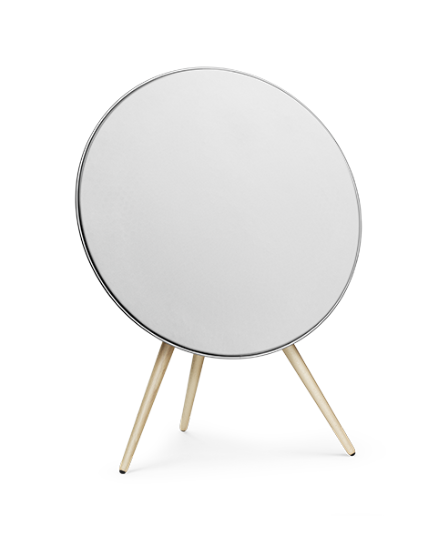

Underlined - weight is the same as title below, yet seems stronger

Keep background colors simple.
It's challenging to work with bright background colors. Overlay with monotone colors.
Text should be the first medium to portray information - supplement, not replace, with visual content.
Montblanc Cruise
Working with custom typesets
Gravitation is not responsible for people falling in love.
Design is just making things line up.
I think everybody should like everybody.
Don't die wondering.
* Serif typefaces carry much heavier weight than the respective sans counterparts. Generally associative with products & services that face more established customers.
Gravitation is not responsible for people falling in love.
Design is just making things line up.
I think everybody should like everybody.
Don't die wondering.
* Sans-Serif typefaces have a "playful" / "friendly" vibe to them.